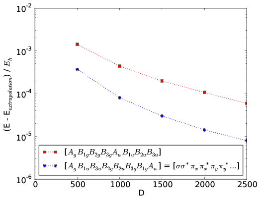

6. DMRG calculations¶
6.1. CheMPS2::Problem¶
Once a CheMPS2::Hamiltonian object is created and filled with matrix elements, the desired symmetry sector should be specified in the CheMPS2::Problem object:
CheMPS2::Problem::Problem( const CheMPS2::Hamiltonian * Hamin, const int TwoSin, const int Nin, const int Irrepin )
The variable Hamin contains the number of orbitals, the point group of the Hamiltonian, and the irrep of each orbital. The variable TwoSin should be \(2S\), twice the targeted spin value in the active space (multiplicity minus one). The variable Nin should be the number of electrons in the active space. The variable Irrepin should be the targeted irrep in the active space, defined according to the numbering conventions in psi4. The section Custom matrix elements lists these conventions.
6.2. CheMPS2::ConvergenceScheme¶
The CheMPS2::Problem defines a FCI problem. In order to perform DMRG calculations, a CheMPS2::ConvergenceScheme should be provided as well. A convergence scheme consists of consecutive instructions, which are executed in order. Each instruction specifies four quantities:
- The number of reduced virtual basis states \(D_{\mathsf{SU(2)}}\) to be retained.
- The energy convergence threshold \(E_{conv}\) to stop the instruction.
- The maximum number of sweeps \(N_{max}\) for that instruction.
- The noise prefactor \(\gamma_{noise}\), which defines the magnitude of the noise added to the tensor \(\mathbf{B}[i]\) prior to singular value decomposition. The noise is bounded in magnitude by \(0.5 \gamma_{\text{noise}} w_D^{disc}\), where \(w_D^{disc} = \max\limits_{i}\left( w_D[i] \right)\), the maximum discarded weight of the previous sweep.
A typical example of a convergence scheme is:
\(D_{\mathsf{SU(2)}}\) \(E_{conv}\) \(N_{max}\) \(\gamma_{noise}\) 500 1e-8 10 0.05 1000 1e-8 10 0.05 1500 1e-8 10 0.05 2000 1e-8 10 0.05 2500 1e-8 10 0.05 2500 1e-8 10 0.0 2000 1e-8 10 0.0 1500 1e-8 10 0.0
At first, the number of retained reduced virtual basis states is increased in each instruction, while noise is added to the wavefunction prior to decomposition. Afterwards, instructions without noise are performed and the number of retained reduced virtual basis states is decreased. The instructions with decreasing \(D_{\mathsf{SU(2)}}\) are used to extrapolate the variational DMRG energies with discarded weight (see section Extrapolation).
The API for the CheMPS2::ConvergenceScheme class:
CheMPS2::ConvergenceScheme::ConvergenceScheme( const int nInstructions )
void CheMPS2::ConvergenceScheme::setInstruction( const int instruction, const int D, const double Econv, const int nMax, const double noisePrefactor )
The variable D is the number of reduced virtual basis states \(D_{\mathsf{SU(2)}}\)!
6.3. CheMPS2::DMRG¶
With the CheMPS2::Problem and CheMPS2::ConvergenceScheme objects, DMRG calculations are completely defined:
CheMPS2::DMRG::DMRG( CheMPS2::Problem * Probin, CheMPS2::ConvergenceScheme * OptSchemeIn, const bool makechkpt, const string tmpfolder="/tmp" )
double CheMPS2::DMRG::Solve()
If the variable makechkpt is true, MPS checkpoints of the form CheMPS2_MPS*.h5 are generated in the execution folder. They are stored/overwritten each time a full left and right sweep has been performed. The checkpoints allow to restart calculations. It is the responsibility of the user to remove the completed instructions from the CheMPS2::ConvergenceScheme before restarting a calculation!
The function CheMPS2::DMRG::Solve() performs the instructions and returns the minimal encountered energy during all sweeps (which is variational). It is possible to extrapolate the variational energies obtained with different \(D_{\mathsf{SU(2)}}\) to \(D_{\mathsf{SU(2)}} = \infty\). This is explained in the section Extrapolation.
In addition to the energy, the 2-RDM of the active space can also be obtained, as well as several correlation functions. Thereto, the following functions should be used:
void CheMPS2::DMRG::calc2DMandCorrelations()
CheMPS2::TwoDM * CheMPS2::DMRG::get2DM()
CheMPS2::Correlations * CheMPS2::DMRG::getCorrelations()
double CheMPS2::TwoDM::getTwoDMA_HAM( const int cnt1, const int cnt2, const int cnt3, const int cnt4 ) const
double CheMPS2::TwoDM::getTwoDMB_HAM( const int cnt1, const int cnt2, const int cnt3, const int cnt4 ) const
double CheMPS2::Correlations::getCspin_HAM( const int row, const int col ) const
double CheMPS2::Correlations::getCdens_HAM( const int row, const int col ) const
double CheMPS2::Correlations::getCspinflip_HAM( const int row, const int col ) const
double CheMPS2::Correlations::getCdirad_HAM( const int row, const int col ) const
double CheMPS2::Correlations::getMutualInformation_HAM( const int row, const int col ) const
void CheMPS2::Correlations::Print( const int precision=6, const int columnsPerLine=8 ) const
The 2-RDM is again represented in physics notation. As CheMPS2 is a spin-adapted code, only spin-summed quantities can be obtained as output:
The correlation functions are defined as:
where \(\hat{d}_{i\sigma} = \hat{n}_{i\sigma} (1 - \hat{n}_{i~-\sigma})\). \(I(i,j)\) is the two-orbital mutual information. For more information on the latter, please read Ref. [MUTINFO].
6.4. Excited states¶
The CheMPS2::DMRG class also allows to calculate excited states in the symmetry sector specified in the CheMPS2::Problem object:
void CheMPS2::DMRG::activateExcitations( const int maxExcIn )
void CheMPS2::DMRG::newExcitation( const double EshiftIn )
The variable maxExcIn should be the maximum number of excitations to be calculated. The variable EshiftIn is the energy shift you apply to the current MPS before pushing it back. CheMPS2 calculates excited states in a state-specific manner. Suppose you have just calculated the ground state in the current symmetry sector of the Hamiltonian
By calling CheMPS2::DMRG::newExcitation( Eshift ), you push back \(\left| \Psi_0 \right\rangle\) and change the Hamiltonian to
By choosing \(E_{\text{shift}} > E_1 - E_0\), the ground state is projected to a higher energy than \(E_1\), and \(\left| \Psi_1 \right\rangle\) can now be obtained as the ground state of \(\hat{H}_1\).
An example code fragment to calculate the second excited state (assuming it is still bound):
CheMPS2::DMRG * myDMRG = new CheMPS2::DMRG( myProblem, myConvergenceScheme, myMakechkpt );
const double Energy0 = myDMRG->Solve();
myDMRG->activateExcitations( 2 );
myDMRG->newExcitation( fabs( Energy0 ) );
const double Energy1 = myDMRG->Solve();
myDMRG->newExcitation( fabs( Energy1 ) );
const double Energy2 = myDMRG->Solve();
After each call to CheMPS2::DMRG::Solve(), it is possible to calculate and fetch the 2-RDM and correlation functions, as described in the section CheMPS2::DMRG.
6.5. Extrapolation¶
After reaching the maximum reduced virtual dimension \(D_{\mathsf{SU(2)}}\), a few sweeps with successively smaller bond dimensions can be performed, as shown in the example in section CheMPS2::ConvergenceScheme. The corresponding triples with the reduced virtual dimension, the variational energy, and the discarded weight \(( D_{\mathsf{SU(2)}} , E_{D} , w_D^{disc} )\) can be obtained from the output of CheMPS2:
$ grep "The reduced virtual dimension DSU(2)" myCheMPS2calc.out
$ grep "Minimum energy encountered during the last sweep" myCheMPS2calc.out
$ grep "Maximum discarded weight during the last sweep" myCheMPS2calc.out
The energy \(E_{D}\) is a linear function of the discarded weight \(w_D^{disc}\), which allows to extrapolate the DMRG energies \(E_D\) to the FCI energy. An example of such an extrapolation for N2 in the cc-pVDZ basis with nuclear separation 2.118 a.u. is given in the figure below:

6.6. Orbital choice and ordering¶
The orbital choice and ordering significantly influences the rate of convergence of DMRG calculations. The CheMPS2::DMRG class uses the orbitals and ordering from the input CheMPS2::Hamiltonian object. It is hence the responsibility of the user to choose and order the orbitals wisely!
As correlations are propagated by the virtual bonds, it is important to place strongly correlated orbitals close to each other in the DMRG chain. Two rules of thumb exist:
- For elongated molecules such as polyenes, it is best to use localized orbitals, sorted according to the molecule’s topology.
- For compact molecules such as dimers, it is best to group orbitals in irrep blocks, and to place bonding and anti-bonding irreps adjacent.
An example for the all-trans polyene \(C_{14}H_{16}\) is provided in the figure below. Its geometry was optimized at the B3LYP/6-31G** level of theory. The \(\sigma\)-orbitals are kept frozen at the RHF/6-31G level of theory, and the active space consists of 28 RHF/6-31G \(\pi\)-orbitals. In the figure, the convergence rates of DMRG calculations with canonical RHF orbitals and with localized orbitals (Edmiston-Ruedenberg) are compared.

An example for N2 in the cc-pVDZ basis with nuclear separation 2.118 a.u. is given in the figure below. The convergence rates of DMRG calculations using the standard irrep ordering in psi4 and the ordering where bonding and antibonding irreps are placed adjacent are compared.
For homonuclear dimers with d2h symmetry, the CheMPS2::Problem object allows to reorder the irrep blocks from standard psi4 ordering to the ordering shown in the figure with bonding and antibonding irreps adjacent:
void CheMPS2::Problem::SetupReorderD2h()
For more information on how to setup DMRG calculations, and on how to choose and order orbitals, please consult Ref. [ORBITAL].
| [MUTINFO] |
|
| [ORBITAL] |
|